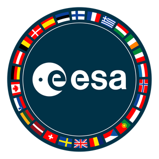
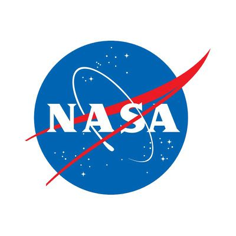

{kind=link}
{kind=link}
{kind=link}
{kind=link}
{kind=link}
Agências espaciais
Conheça as principais espaciais governamentais engajadas em atividades relacionadas ao espaço exterior e à exploração espacial.

Organização das Nações Unidas (ONU)
ONU - the United NationsO órgão da ONU que trata de assuntos relacionados ao espaço exterior é a OOSA (Office for Outer Space Affairs). A OOSA é uma organização da assembleia geral encarregada de implementar as políticas da assembleia relacionadas ao espaço exterior.

Agência Espacial Europeia
European Space AgencyA ESA, Agência Espacial Europeia ("European Space Agency"), estabelecida em 1975, é uma organização intergovernamental dedicada à exploração do espaço com, atualmente, 22 estados membros.

Administração Nacional da Aeronáutica e Espaço
National Aeronautics and Space Administration — NASAÉ uma agência do governo federal dos Estados Unidos responsável pela pesquisa e desenvolvimento de tecnologias e programas de exploração espacial. Sua missão oficial é "fomentar o futuro na pesquisa, descoberta e exploração espacial".